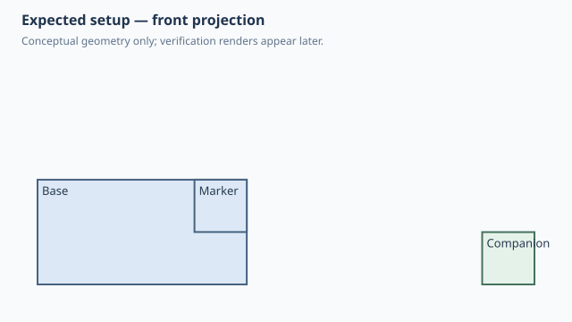

Forge qualification case
Assembly-owned named anchor
1. Test setup

Test goal
Verify that an assembly can publish a semantic attachment name without putting that application-specific datum on the reusable component, and that a consumer of the name still lowers to an associative native relationship.
Pass criteria
The marker sits on the base front-top-right corner while an unrelated companion occurrence remains part of the same assembly.
Mutation criterion
Change base_width/base_height from 40x20 to 80x40 mm in the saved .sc design; the marker created through the assembly-owned name must follow the moved corner without rerunning Python.
2. Implementation under test
Fixture source
"""Qualification: an assembly-owned named anchor remains associative."""
class Base:
width = 40.0
height = 20.0
DEPTH = 30.0
def build(self):
return Box(self.width, self.DEPTH, self.height)
class Companion:
SIZE = 10.0
def build(self):
return Box(self.SIZE, self.SIZE, self.SIZE)
class Marker:
def build(self):
return Box(10, 10, 10)
class AssemblyOwnedAnchor:
base_width = 40.0
base_height = 20.0
def build(self):
base = Base(
width=self.base_width,
height=self.base_height,
name="base",
)
companion = Companion(name="companion").move(x=70)
frame = (base + companion).with_anchor(
"inspection_corner",
base,
Anchor.FRONT_TOP_RIGHT,
)
datum = frame.anchor("inspection_corner")
marker = Marker().attach(
datum.target,
parent=datum.reference,
child=Anchor.BACK_TOP_RIGHT,
offset=datum.offset,
)
return frame + marker
AssemblyOwnedAnchor()
Public Forge API used
(base + companion).with_anchor('inspection_corner', base, Anchor.FRONT_TOP_RIGHT); datum = frame.anchor('inspection_corner'); Marker().attach(datum.target, parent=datum.reference, ...)
Forge model represented by this fixture
The assembly stores a name mapped to an existing target occurrence plus a normal Forge anchor reference. The reusable Base knows nothing about the semantic name.
3. Generated SolidCraft relationship
with_anchor()/anchor() are Forge-side semantic indirection only. The resulting native joint is the same topology-backed FRONT_TOP_RIGHT relationship that a direct attach would emit; no extra native helper object is required.
Show generated relationship / command details
[
{
"command": "joint.create",
"params": {
"type": "rigid",
"name": "Attach Marker:1 to Base:1",
"a": {
"occurrence": "Base:1",
"edge": [
20.0,
-15.0,
10.0
],
"on": [
0.0,
-15.0,
10.0
],
"corner": [
20.0,
-15.0,
20.0
]
},
"b": {
"occurrence": "Marker:1",
"point": [
20.0,
-15.0,
20.0
],
"z": [
0.0,
1.0,
0.0
],
"x": [
-1.0,
0.0,
0.0
]
}
}
}
]3. Results
6. Evidence and references
Raw evidence
Show generated files and measurements
Reference models
These comparisons clarify concepts; Forge does not promise API compatibility with them.
- BOSL2: Semantic attachment names belong naturally to the assembly that owns their meaning rather than to a generic reusable component.
- SolidCraft: The semantic name disappears during lowering; the persisted native relationship remains topology-backed and associative.